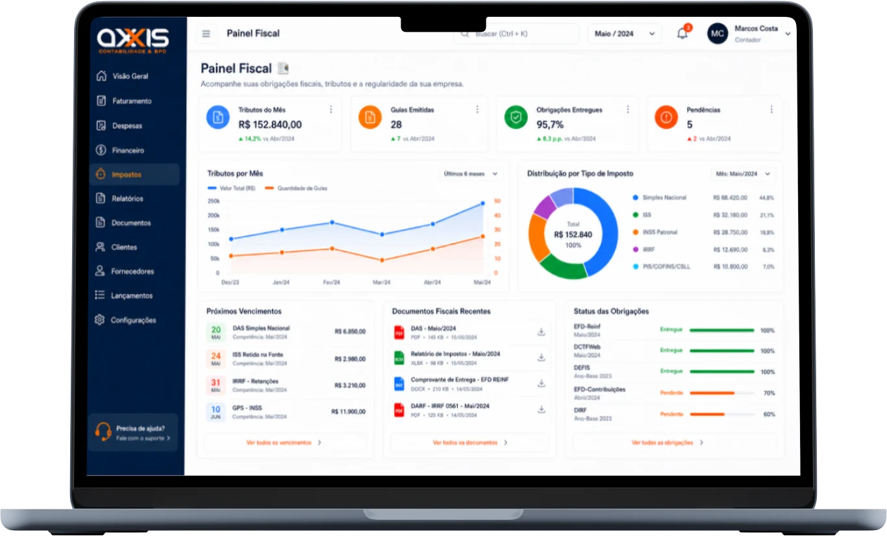

Emitir nota fiscal de serviço parece a parte mecânica da rotina: preencher, transmitir, enviar. É aí, porém, que se concentram os pedidos de correção que chegam ao escritório todo mês — e a origem quase sempre é a mesma: o cadastro.
Nota de serviço é documento municipal: cada prefeitura tem o próprio sistema, a própria lista de códigos e as próprias regras. Não existe manual único que sirva para todo mundo, mas existe um conjunto de pontos de atenção que se repete em qualquer município.
1. O cadastro municipal que ficou pela metade
Antes da primeira nota, a empresa precisa estar inscrita no município e efetivamente habilitada a emitir — o que costuma envolver o cadastro da atividade, a vinculação ao enquadramento e, na maioria dos sistemas, um certificado digital. Quando um desses itens fica pendente, a nota não transmite justamente no dia em que o cliente precisa dela para liberar o pagamento.
2. O código de serviço escolhido no impulso
O código de serviço municipal determina como a prefeitura trata aquele serviço. Escolher o código que parece mais próximo na primeira emissão e repeti-lo para sempre é o erro mais silencioso de todos: ele só aparece quando o cliente recusa a nota ou quando a apuração não fecha. A escolha precisa partir do contrato e da atividade real.
3. A descrição genérica
"Serviços prestados conforme contrato" economiza trinta segundos na emissão e custa horas depois. A descrição liga a nota ao contrato e ao pagamento, é o que o contas a pagar do cliente usa para aprovar e é o que sustenta a natureza do serviço em qualquer verificação futura. Uma descrição que funciona costuma trazer:
- O que foi entregue, em linguagem que o contratante reconheça.
- O período de referência ou a etapa do projeto.
- A referência do contrato, da proposta ou da ordem de serviço.
- As informações que o contratante exige — pedido, centro de custo, empenho.
4. Os dados do tomador incompletos
Nota com CNPJ errado, razão social diferente da do contrato ou endereço desatualizado costuma voltar. E, em boa parte dos sistemas municipais, corrigir não é editar: é cancelar e emitir de novo. Pedir os dados cadastrais do cliente uma vez, antes da primeira nota, resolve o problema para todas as seguintes.
5. As retenções que ninguém destacou
Dependendo do serviço, do município e do perfil do contratante, parte dos tributos pode ser retida por quem paga — e a nota precisa refletir isso. Sem o destaque, ou o cliente segura a nota até a correção, ou paga o valor cheio e a diferença reaparece na apuração como problema do prestador.
Códigos de serviço, alíquotas municipais, hipóteses de retenção e regras de cancelamento variam de município para município e mudam ao longo do tempo. Confirme com a equipe da Axxis o que se aplica ao seu cadastro antes de emitir.
6. O pedido para emitir "no mês que vem"
O cliente pede para adiar a nota, o prestador topa para não criar atrito, e a conversa parece resolvida. Não é: a data de emissão determina a competência em que aquela receita entra na apuração, e competência não é um combinado comercial. Quando o pedido tem uma razão legítima de caixa, o caminho é tratar a condição de pagamento no contrato.
Prazo de pagamento se negocia no contrato. Data de emissão de nota não é campo de negociação.
Equipe Axxis Contabilidade Digital

Checklist antes de transmitir
- O cadastro municipal está ativo e a empresa está habilitada a emitir.
- O código de serviço corresponde ao que está no contrato, não ao que foi usado por hábito.
- A descrição diz o que foi entregue, em qual período e sob qual contrato.
- Os dados do tomador foram conferidos na fonte, não copiados de uma nota antiga.
- A situação de retenção do contratante foi verificada antes da emissão.
- A data de emissão corresponde à competência real do serviço prestado.
Nenhum desses itens leva mais que alguns minutos quando é feito na hora certa, e todos custam caro quando viram correção. Se alguma linha do checklist deixa dúvida no seu caso, ela é o assunto da próxima conversa com a equipe.